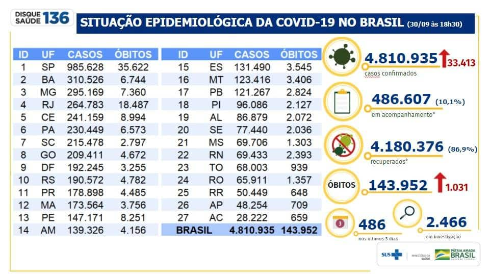
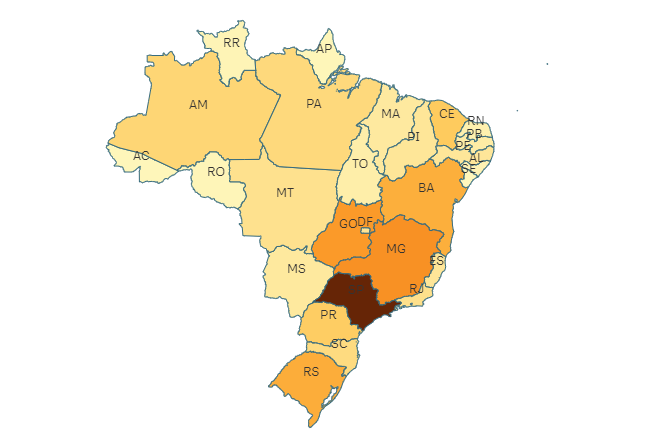
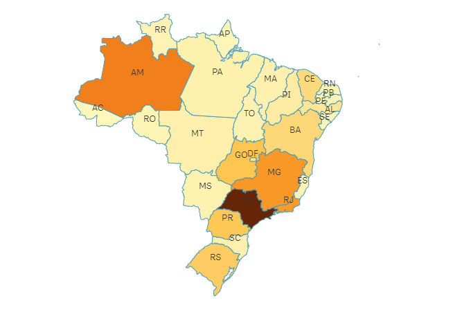
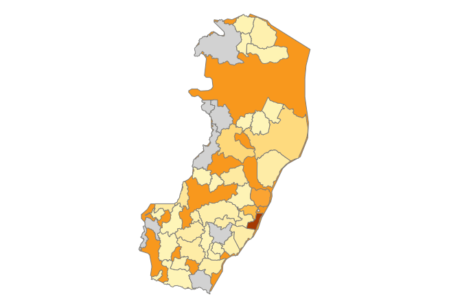
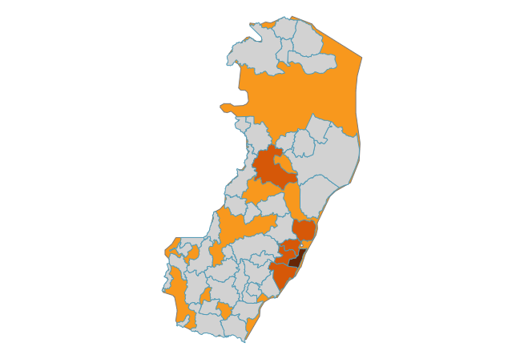

O que e COVID - 19 ?
fonte:Grupo Notre Dame Itermédica

O novo Coronavírus foi descoberto em Wuhan, cidade chinesa com 11 milhões de habitantes, por conta de uma série de casos de pneumonia com origem desconhecida. Depois de algumas pesquisas, foi descoberta a COVID-19, doença causada pelo novo Coronavírus. Desde então, o vírus vem se espalhando exponencialmente por todo o globo terrestre – e já causou quase 170 mil mortes confirmadas só até meados de abril. veja mais...
Estatista Da Covid No Brasil

fonte:Olhar Digital
Casos Novos No Brasil
fonte Imagem:Ministerio Da Saude - DATA:01/10/2020 as 16:58
veja atualização...
No dia 29 de julho, o país registrou o maior número de casos confirmados da Covid-19 em 24 horas;foram 72.377 novos casos.
No dia 16 de junho,menos de um mês depois de atingir a triste marca de um milhão de casos de Covid-19 confirmados,o Brasil alcança o registro de mais de dois milhões de infectados no país.
Em 8 de julho,o país chegou a um milhão de pessoas recuperadas da doença. Atualmente,o Brasil é o segundo país com mais óbitos registrados pela Covid-19, atrás apenas dos Estados Unidos.
veja mais...fonte:Olhar Digital
Obitos No Brasil
fonte Imagem:Ministerio Da Saude - DATA:01/10/2020 as 17:02
veja atualização...
No final da tarde desta quarta-feira (30), o Conselho Nacional dos Secretários de Saúde (Conass) atualizou os números diários sobre a pandemia do novo coronavírus no Brasil. Segundo os últimos dados, o país agora possui 4.810.935 casos confirmados e 143.952 mortes pela Covid-19.
Somente nas últimas 24 horas, foram incluídos mais 33.413 contaminados e 1.031 falecimentos pela doença. A taxa de letalidade em todo o território nacional neste momento permanece em 3,0%.
O aumento de pessoas infectadas no dia se manteve mais uma vez acima dos 30 mil. Até agora, os recordes de confirmações e vítimas fatais de todo o período da pandemia no território brasileiro ocorreram no dia 29 de julho, com mais 72.377 e 1.664, respectivamente.
Com estes novos dados sobre a pandemia, o país se mantém como o segundo com maior número de pacientes e mais óbitos pelo coronavírus no mundo, de acordo com a Universidade Johns Hopkins e os dados do Worldometers. O Brasil é um dos líderes em acréscimos de mortes diárias e casos no mundo.
veja mais...
Casos e Obitos ES
fonte Imagem:Ministerio Da Saude - DATA:01/10/2020 as 19:19
 
veja atualização...
Confira Mais Sobre o COVID-19 No ES...
Planilha De INFORMAÇÕES de infectados ...
O Que e COVID - 19
O novo Coronavírus foi descoberto em Wuhan, cidade chinesa com 11 milhões de habitantes, por conta de uma série de casos de pneumonia com origem desconhecida.
veja mais...Novos Casos No Brasil
No dia 29 de julho, o país registrou o maior número de casos confirmados da Covid-19 em 24 horas; foram 72.377 novos casos..
veja mais...Obitos No Brasil
No final da tarde desta quarta-feira (30), o Conselho Nacional dos Secretários de Saúde (Conass) atualizou os números diários sobre a pandemia do novo coronavírus no Brasil. Segundo os últimos dados, o país agora possui 4.810.935 casos confirmados e 143.952 mortes pela Covid-19.
veja mais...